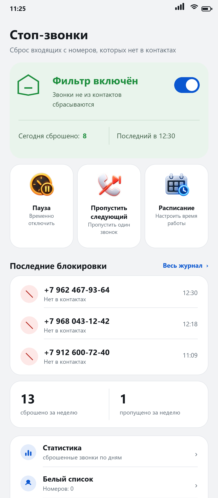
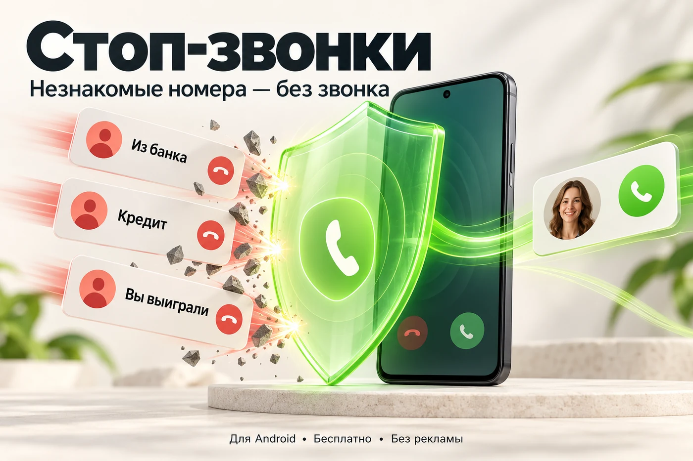
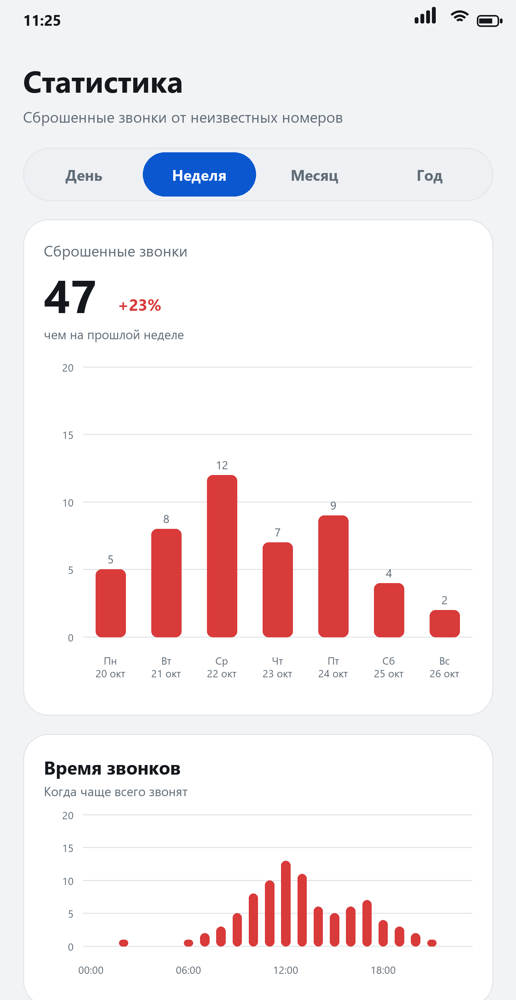

Сбрасывает входящие с номеров, которых нет в ваших контактах, до первого гудка. Ведёт журнал, знает про паузу и белый список. Без рекламы, без аккаунта, без слежки.
Скачать APK Исходный код

Android 10+ · без рекламы и подписок · ~275 КБ
Система отдаёт приложению звонок до того, как телефон зазвонит. Номера нет в контактах — вызов отклоняется.
Номер, время и причина каждого решения. Долгое нажатие на строку копирует номер — удобно проверить его в поиске.
30 минут, час, два или три — на выбор. Плюс расписание на будни с 9 до 18 и пропуск следующего незнакомого звонка.
Сколько звонков сброшено за день, неделю, месяц или год: график по дням, сравнение с прошлым периодом и время, когда звонят чаще всего.
Постоянное тихое уведомление в шторке: «Фильтр включён», пауза или расписание. При перезагрузке возвращается само.
Номера больниц, доставок и других нужных людей проходят всегда, даже когда фильтр включён.
Код страны берётся из SIM или сети, номера сверяются в международном формате — контакт из Берлина не попадёт под блокировку.
Язык интерфейса переключается в приложении: «О приложении» → «Язык». По умолчанию — как в системе.
Цифра за период, сравнение с прошлым периодом и два графика: сколько звонков сброшено по дням и в какие часы звонят чаще всего.

Приложение бесплатное: без рекламы, без подписок и без платных версий. Если «Стоп-звонки» сберегли вам пару нервов — можно отблагодарить автора.
Поддержать на BoostyСпасибо, что пользуетесь приложением.
Роль фильтрации на телефоне одна. Назначив её приложению, вы отключаете встроенный определитель Google; вернуть можно там же, в «Caller ID & spam app».
В приложении есть кнопка «Проверить обновление»: оно смотрит последний релиз на GitHub, скачивает APK и передаёт его системному установщику. Обновление ставится поверх — журнал и белый список сохраняются. Если удобнее вручную, скачайте новый APK и установите его тем же способом.
Проверка обновлений — единственное сетевое действие приложения. Запрос идёт только к
api.github.com, никакие данные о звонках и контактах не передаются.
Полный функционал: фильтрация до первого гудка, журнал, расписание, автообновление.
Система разрешает перехватывать звонки только приложению-дозвонщику по умолчанию. Подменять собой «Телефон» мы не стали — это другой продукт.
iOS не даёт сторонним приложениям ни номер звонящего, ни права отклонить вызов. Подробный разбор.
Android не передаёт такие вызовы приложениям-фильтрам. Чтобы не звонили и они, включите в приложении «Телефон» блокировку неизвестных: Телефон → Настройки → Заблокированные номера → «Неизвестные».
STIR/SHAKEN подтверждает номер на стороне оператора. Опция «блокировать без маркера» есть, но по умолчанию выключена: иначе под блокировку попали бы и ваши контакты. Журнал показывает маркер для каждого звонка.
Поэтому +7 916 123-45-67, 8 (916) 123-45-67 и 9161234567 считаются
одним номером. Иначе форматирование ломало бы сверку.
Отдельной базы нет: приложение считает сбросы из журнала, а он хранит последние 1000 записей. На обычном телефоне этого хватает на месяцы, но очень старые звонки со временем вытесняются.
На Android 13 и новее приложение один раз спросит разрешение. Если отказать, уведомление не появится — на саму фильтрацию это не влияет.